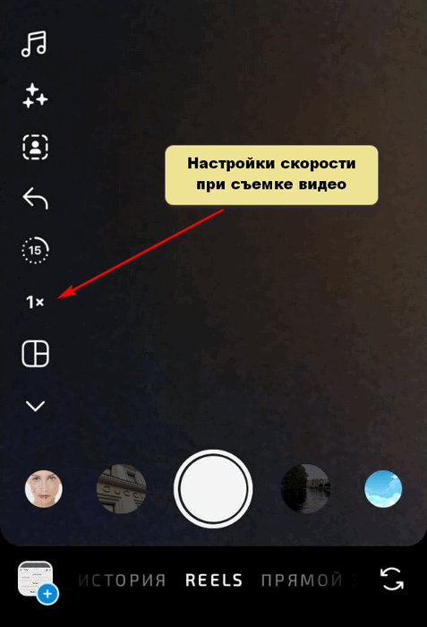
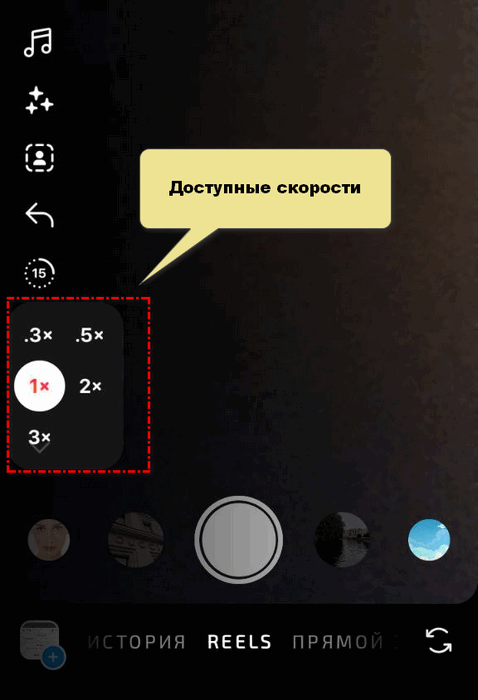
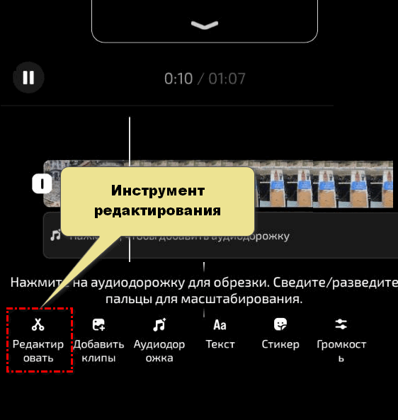
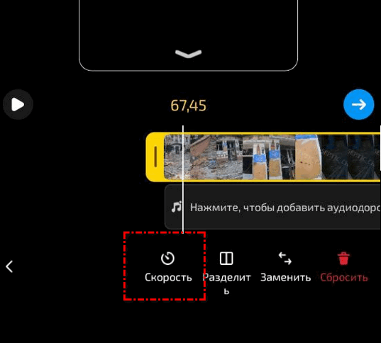
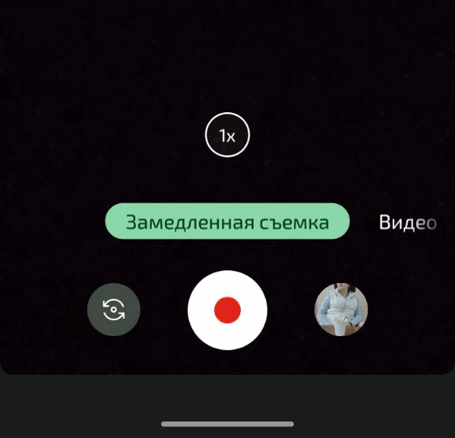
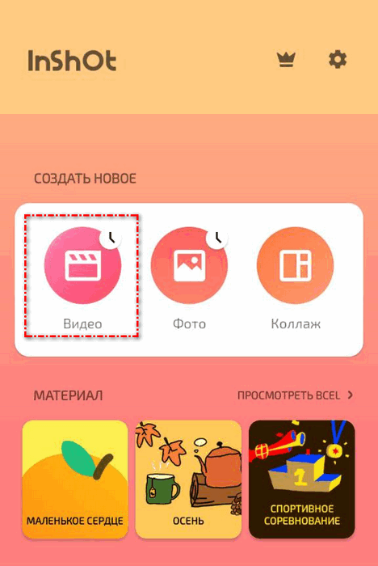
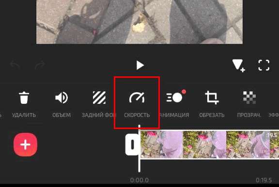
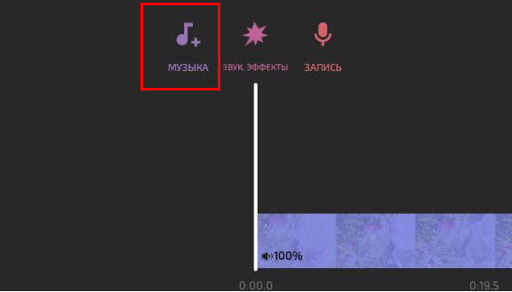
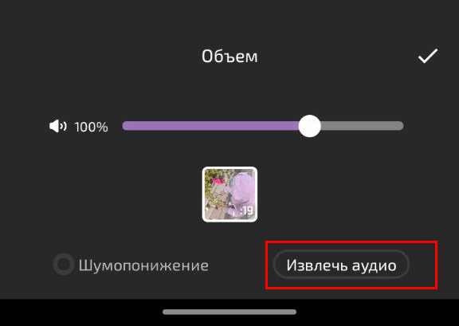

Как сделать замедленное видео в Рилс в Инстаграме

Одна из функций для создания креативного контента – замедлить видео в Рилс Инстаграма*, доступна в самом приложении - настройка скорости съемки видео, кто то называет это слоумо. При съемке и редактировании автор может регулировать скорость, увеличивая или уменьшая её.
Как замедлить видео в Инстаграме*
Раздел Reels предлагает авторам не только размещение и просмотр клипов, а и их базовое редактирование. В настройках есть скорость, добавление масок, работа с музыкальной дорожкой, разделение клипа, обрезка.
Чтобы сделать замедленный Рилс в Инстаграм*, доступно три варианта:
- стандартные возможности редактора Reels;
- работа через встроенные параметры на смартфоне;
- внешние приложения.
С помощью редактора в приложении можно замедлять видео при съемке или его добавлении из Галереи. Уменьшить скорость при съемке:
- Зайти в Инстаграм* – нажать по кнопке «Рилс» внизу экрана.

- В боковом меню нажать: «Скорость» - указать от .3х до 1х.

- Снять клип – перейти к редактированию.
Reels предлагает несколько скоростей, чтобы снять медленное видео. Также доступно изменение видео по-частям: снять одну часть и замедлить, а другая в обычной скорости.
Замедлить добавленный клип из Галереи:
- Перейти в Reels – открыть раздел со съемкой.
- В правом нижнем углу выбрать «Галерея».

- Выбрать клип – перейти к опции: «Скорость».

Если автор хочет изменить кусок видео:
- Загрузить клип из Галереи – нажать по кнопке: «Редактировать».
- Указать нужный отрезок – Разделить.
- Применить к новой части инструмент «Скорость».
Пользователь может делить клип на маленькие части, чтобы сделать переход с ускорением скорости и замедлением.
Доступные скорости в Reels
В Reels есть несколько скоростей, которые сделают видео интереснее:
- 0,25x (самый медленный);
- 0,5x;
- 0,75x;
- 1x (нормальная скорость);
- 1,25x;
- 1,5x;
- 2x (самый быстрый).
Редактируя видео, которое было загружено из Галереи, автору открывается более точная настройка скорости: от 0,2 до 10х. Замедление стоит использоваться в случаях:
- выделить в клипе смешной или интересный момент;
- акцентировать внимание на важных деталях, задействовав приближение;
- попробовать новый формат или идею.
Не стоит замедлять скорость для всего видео или использовать инструмент постоянно. От этого клипы будут скучными и перестанут показываться в рекомендациях, так же играет роль и время размещения.
Через стандартные настройки устройства
Замедлить видео в Reels можно при съемке на своем устройстве. Смартфоны зачастую поддерживают базовые функции по редактированию клипов и подобные инструменты присутствуют на Android и iOS. Сделать замедленное видео через Android:
- Зайти в приложение: «Камера» - выбрать режим: «Замедленная съемка».

- Снять клип и сохранить.
Или изменить уже записанный клип:
- Зайти в Галерею – выбрать ранее записанное видео.
- Нажать по опции: «Изменить» (в виде карандаша).
- В инструментах: «Скорость» - указать нужный параметр.
На iOS:
- Зайти в iMovie – Создать новый проект.
- Указать видео для редактирования – выбрать параметр: «Скорость».
- Отрегулировать нужную – сохранить на телефон.
После этого можно загружать видео в Reels, добавляя популярную музыку или другие визуальные эффекты.
Приложение InShot
Чтобы замедлить Рилс в Инстаграм*, автор может прибегнуть к дополнительным способам – установка приложений из AppStore или PlayMarket. Один из популярных и простых редакторов – InShot. Его можно установить из магазина контента, убрать вотемарку через просмотр рекламы и и пользоваться всеми инструментами, включая каталог музыки без АП (авторского права).
Мы знаем, как сделать твои видео еще популярнее. Посмотри эту статью
Как ускорить или замедлить видео с помощью inShot:
- Зайти в Play Market или AppStore, чтобы скачать приложение.
- Установить – открыть и перейти к созданию нового проекта.

- Выбрать из Галереи одно или несколько видео для редактирования.
- Среди инструментов указать: «Скорость» - подобрать нужный параметр.

- Сохранить клип на телефон в нужном формате и разрешении.
InShot может делить видео, обрезать, добавить переходы и фильтры. Кроме этого приложения есть другие, не менее популярные и удобные:
- CapCut. Каталог шаблонов, редактирование света и тени, цветокоррекция;
- VN Video. Преобразовать звук в субтитры, отредактировать свето-тень, улучшение качества;
- ReelsApp. Более 200 шаблонов, режим автоматического создания клипов, изменение отдельных частей.
Чтобы создавать качественнst клипы, автору стоит попробовать каждое из приложений и выбрать то, с которым ему работать комфортно.
Изменился звук при замедленной съёмке в Инстаграме*
При замедлении клипа можно заметить, что звук стал громче и изменились голоса, музыка. В этом поможет приложение inShot, где есть функция: «Отделить аудио». Прежде чем замедлять клип, нужно отделить звуковую дорожку и оставить её без изменений. Как выделить аудио в клипе:
- Зайти в InShot — создать новый проект.
- Выбрать клип для редактирования — выделить видеодорожку с помощью нажатия.
- Перейти во вкладку: «Музыка» — нажать еще раз по видео.

- Появятся дополнительные функции: изменить громкость и извлечь аудио.
- Отделить звук от клипа — перейти к изменению скорости видео, нажать по дорожке с изображением.
- Отредактировать и посмотреть клип.

- Сохранить на смартфон.
При редактировании клипа в Рилс Инстаграма*, можно предварительно записать без звука, а после добавить озвучку. Или воспользоваться коллекцией музыки и подставить звук под видеозапись.